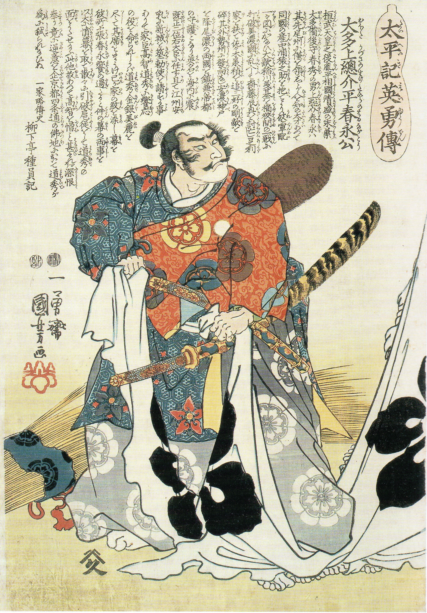

Oda Nobunaga
Oda Nobunaga was a Japanese daimyō and one of the leading figures of the Sengoku period. He is regarded as the first "Great Unifier" of Japan. Nobunaga was head of the very powerful Oda clan, and launched a war against other daimyō to unify Japan in the 1560s. Nobunaga emerged as the most powerful daimyō, overthrowing the nominally ruling shogun Ashikaga Yoshiaki and dissolving the Ashikaga Shogunate in 1573. He conquered most of Honshu island by 1580, and defeated the Ikkō-ikki rebels in the 1580s. Nobunaga's rule was noted for innovative military tactics, fostering of free trade, reforms of Japan's civil government, and the start of the Momoyama historical art period, but also for the brutal suppression of those who refused to cooperate or yield to his demands. Nobunaga was killed in the Honnō-ji Incident in 1582, when his retainer Akechi Mitsuhide ambushed him in Kyoto and forced him to commit seppuku. Nobunaga was succeeded by Toyotomi Hideyoshi, who along with Tokugawa Ieyasu completed his war of unification shortly afterwards. Nobunaga was an influential figure in Japanese history and is regarded as one of the three great unifiers of Japan, along with his retainers Toyotomi Hideyoshi and Tokugawa Ieyasu. Hideyoshi later united Japan in 1591, and invaded Korea a year later. However, he died in 1598, and Ieyasu took power after the Battle of Sekigahara in 1600, becoming shogun in 1603, and ending the Sengoku period.[1]